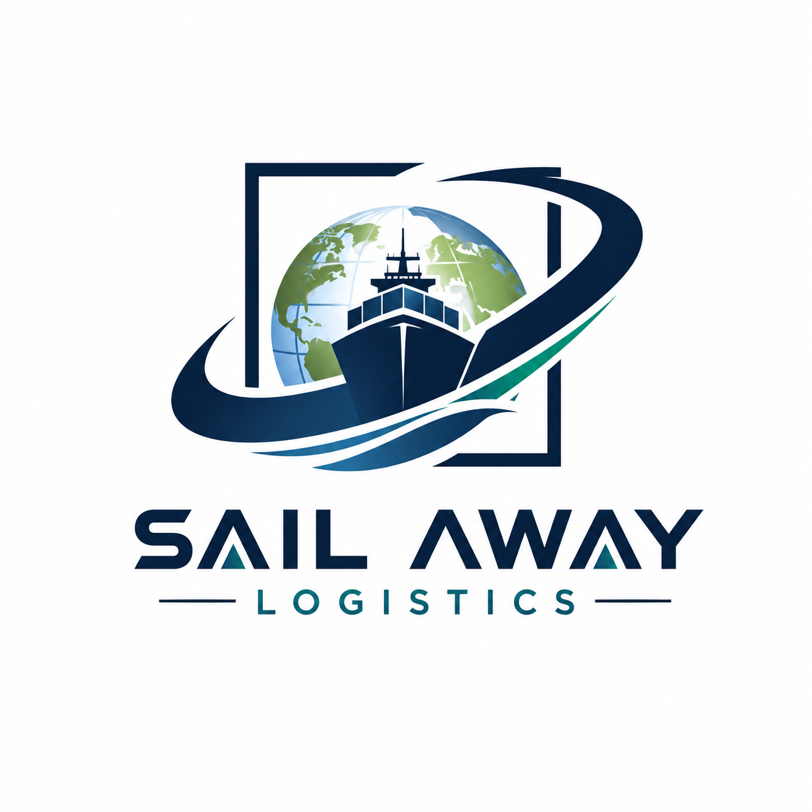

Zones and pickups
Port of Algeciras, Los Barrios, San Roque, La Línea, Tarifa and the A-7 corridor towards Malaga and the national network.

Sailaway LogisticsAlgeciras Campo de Gibraltar
We support loads from Algeciras, Los Barrios, San Roque and La Línea to the peninsula and Europe, including connections related to the port.
Algeciras and Campo de Gibraltar
OptionsPart load, full load, urgent transport and 3.5t van according to availability.
TrackingRoute coordination, operational communication, CMR, POD and delivery confirmation.
Port of Algeciras, Los Barrios, San Roque, La Línea, Tarifa and the A-7 corridor towards Malaga and the national network.
Malaga, Seville, Madrid, Portugal, France, Germany, Benelux, Italy and other European destinations.
Commercial and industrial cargo, pallets, port connections and urgent road shipments.
The final option depends on dimensions, weight, date, loading method and availability.
Send loading and unloading zip code, date, cargo, weight, dimensions and special requirements. We respond with the following steps clearly.
Send cargo dataRelated services
National coverage and road routes within the European Union.
Options for pallets and cargo that does not require a complete vehicle.
Dedicated vehicle and direct coordination until delivery.
Quick response for time-sensitive cargo.